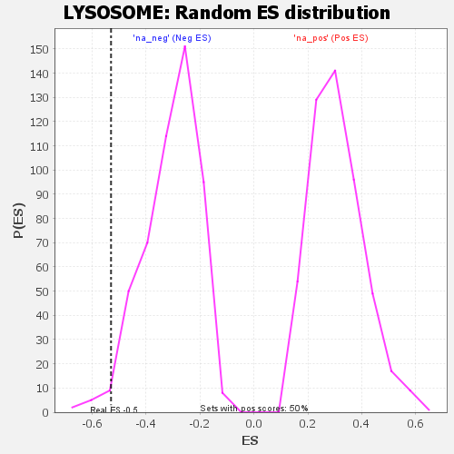

| | | Dataset | GSEA RNK clr Maaslin2 MucosalvsLuminal KO - Jejunum.rnk |
| Phenotype | NoPhenotypeAvailable |
| Upregulated in class | na_neg |
| GeneSet | LYSOSOME |
| Enrichment Score (ES) | -0.5301002 |
| Normalized Enrichment Score (NES) | -1.7284534 |
| Nominal p-value | 0.025793651 |
| FDR q-value | 0.084174566 |
| FWER p-Value | 0.703 |
Table: GSEA Results Summary
 Fig 1: Enrichment plot: LYSOSOME
Fig 1: Enrichment plot: LYSOSOME
Profile of the Running ES Score & Positions of GeneSet Members on the Rank Ordered List

Fig 2: LYSOSOME: Random ES distribution
Gene set null distribution of ES for LYSOSOME